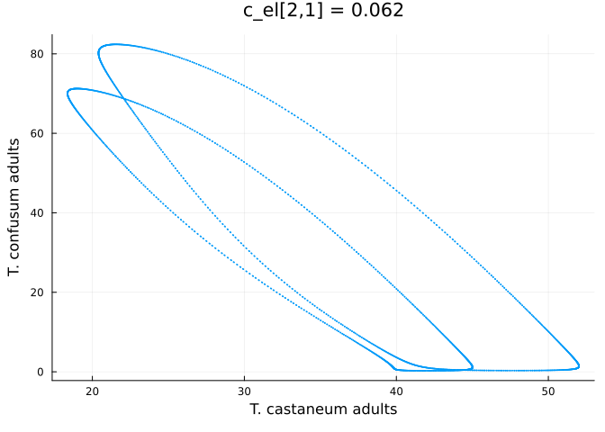
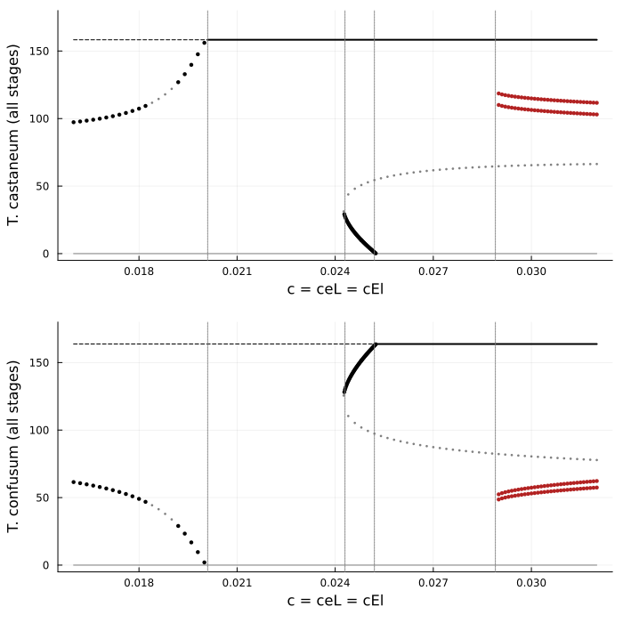
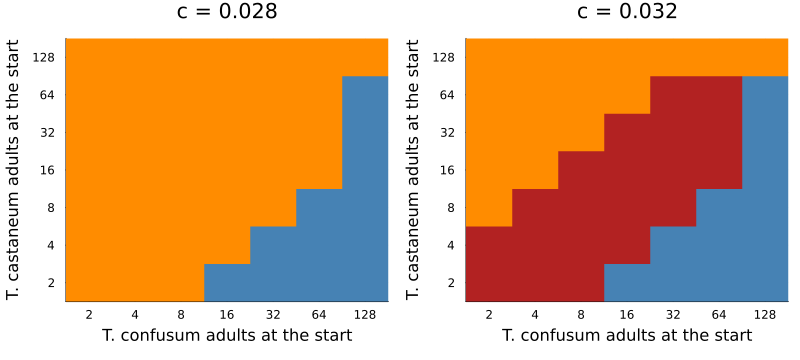

Two flour beetles that eat each other’s eggs: coexistence on a cycle
Simon Frost
- Park’s beetles
- One beetle
- The model of Desharnais et al. (2005)
- The bifurcations of Edmunds et al. (2003)
- Region E: coexisting on a cycle
- What is measured and what is assumed
- References
ENV["GKSwstype"] = "100"
using MatrixCommunityModels
using LinearAlgebra, Printf, Random, Statistics
using PlotsPark’s beetles
Thomas Park grew two flour beetles, Tribolium confusum and T. castaneum, together in vials of flour for twenty years, and one species nearly always died out. The results became a textbook case of competitive exclusion. One culture of Leslie, Park & Mertz (1968) did not fit: the two species lived together for 960 days. Edmunds et al. (2003) suggested that the culture was on a stable cycle on which both species persist, alongside two stable states in which one of them is lost. Desharnais et al. (2005) explored the same model with other parameters and with demographic noise.
In flour beetles the competition is cannibalism and predation. Larvae and adults eat eggs, and adults eat pupae, of their own species and of the other. The model is the larva-pupa-adult (LPA) model of Dennis et al. (1995) for each species, with a time step of two weeks, coupled through what each eats of the other.
One beetle
For one species,
\[L_{t+1} = b A_t \exp(-c_{el} L_t - c_{ea} A_t), \qquad P_{t+1} = (1 - \mu_l) L_t, \qquad A_{t+1} = P_t \exp(-c_{pa} A_t) + (1 - \mu_a) A_t,\]
where L are feeding larvae, P non-feeding larvae, pupae and callow adults, and A adults. The exponentials are the shares of eggs and pupae that escape being eaten. In the two-species model of Edmunds et al. (2003) the exponents gain the larvae and adults of the other species, each with its own rate.
The printed two-species adult equations of Edmunds et al. (2003) read ... − (1 − µa)aₜ, with a minus sign, in both species and in the typeset PDF, not only in extracted text. Read literally, adults that survive would be subtracted. The single-species equation on the same page, and the two-species equations of Desharnais et al. (2005), add them. The sign here is a plus, and the checks below against the numbers that Desharnais et al. print hold only with a plus.
Each species is a net with four transitions. flour_beetle builds it:
beetle = flour_beetle(:castaneum; b = 10, mu_l = 0.2, mu_a = 0.02,
eats = [:castaneum => (larvae_eggs = 0.025, adults_eggs = 0.025, adults_pupae = 0.03)])
transition_names(system(beetle)[:castaneum])4-element Vector{Symbol}:
:adult_survival
:emergence
:larval_survival
:recruitmentRecruitment of larvae and emergence of adults are multiplied by exp(-pool) for two pools named after the species, castaneum_eggs and castaneum_pupae. Each beetle adds to those pools, its own and the other species’, the rate at which its larvae and adults eat eggs and its adults eat pupae. Composing two beetles gives four pools, one per victim stage and species:
beetles = flour_beetle_competition(TRIBOLIUM_EDMUNDS_2003)
pool_names(beetles)4-element Vector{Symbol}:
:confusum_eggs
:confusum_pupae
:castaneum_eggs
:castaneum_pupaeThe model of Desharnais et al. (2005)
Desharnais et al. list every parameter (their Table 1) and print several states of the model that can be checked. Species 1 is T. castaneum and species 2 T. confusum; c_el[i, j] is the rate at which larvae of species j eat eggs of species i.
d05 = flour_beetle_competition(TRIBOLIUM_DESHARNAIS_2005)
vertical = periodic_point(d05, [0, 0, 0, 100.0, 100, 100], nothing)
horizontal = periodic_point(d05, [98.0, 78, 40, 0, 0, 0], nothing)
twocycle = periodic_point(d05, [9.0, 247, 45, 0, 0, 0], nothing; period = 2)
show2(v) = join([@sprintf("%.2f", x) for x in v], ", ")
println("species 2 alone: (", show2(vertical.n[4:6]), ")")
println("species 1 alone: (", show2(horizontal.n[1:3]), ")")
showeig(λs) = join([@sprintf("%.5f", real(l)) * (abs(imag(l)) > 0 ? @sprintf(" ± %.5fi", abs(imag(l))) : "")
for l in unique(x -> (round(real(x); digits = 8), round(abs(imag(x)); digits = 8)), sort(λs; by = real))], ", ")
println(" its eigenvalues: ", showeig(horizontal.multipliers))
println(" at (98.36, 78.69, 40.93): ", showeig(eigvals(jacobian(d05, [98.36, 78.69, 40.93, 0, 0, 0], nothing))))
println("species 1 two-cycle: (", show2(twocycle.n[1:3]), ") and (", show2(advance(d05, twocycle.n, nothing)[1:3]), ")")species 2 alone: (114.04, 91.23, 148.14)
species 1 alone: (98.36, 78.69, 40.93)
its eigenvalues: -1.12202, -0.15859, -0.00264 ± 0.06754i, 0.59356, 0.86528
at (98.36, 78.69, 40.93): -1.12192, -0.15864, -0.00264 ± 0.06754i, 0.59352, 0.86528
species 1 two-cycle: (9.36, 247.55, 45.48) and (309.43, 7.49, 52.59)The paper gives (0, 0, 0, 114.04, 91.23, 148.14) for T. confusum alone, an unstable equilibrium (98.36, 78.69, 40.93, 0, 0, 0) of T. castaneum alone with eigenvalues −1.1219, −0.1586, −0.0026 ± 0.06754i, 0.86528 and 0.59352, and a two-cycle of T. castaneum alone through (9.36, 247.55, 45.48) and (309.43, 7.49, 52.59). The states agree to the digits printed. The eigenvalues at the exact equilibrium differ from the printed ones in the fourth decimal place; at the equilibrium rounded as printed they agree to every digit, so the paper’s Jacobian was evaluated at the rounded point. Its invasion criterion for T. castaneum at the T. confusum equilibrium is
p = TRIBOLIUM_DESHARNAIS_2005
L2, A2 = vertical.n[4], vertical.n[6]
round(p.b[1] * (1 - p.mu_l[1]) / p.mu_a[1] * exp(-p.c_el[1, 2] * L2 - (p.c_ea[1, 2] + p.c_pa[1, 2]) * A2); digits = 2)0.29as printed (0.29 \< 1: the equilibrium resists invasion, whatever c_el[2, 1]).
The paper varies c_el[2, 1], the rate at which T. castaneum larvae eat T. confusum eggs. From Park’s starting point, four adults of each species, it reports a coexistence two-cycle for 0.092 \< c_el[2, 1] \< 0.17, an invariant loop (a “double loop”) for 0.061 to 0.092, and only the T. confusum equilibrium below 0.061:
with21(c) = flour_beetle_competition(merge(TRIBOLIUM_DESHARNAIS_2005, (c_el = [0.012 0.01; c 0.003],)))
steps(com, n, k) = (for _ in 1:k; n = advance(com, n, nothing); end; n)
for c in (0.05, 0.07, 0.10, 0.15)
com = with21(c)
x = steps(com, [0, 0, 4.0, 0, 0, 4], 5000)
e = periodic_point(com, x, nothing; period = 2)
on_cycle = e.converged && maximum(abs.(e.n .- x)) < 1e-6 && maximum(abs.(e.multipliers)) < 1
println(@sprintf("c_el[2,1] = %.2f: ", c),
sum(x[1:3]) < 1e-6 ? "T. castaneum lost" : on_cycle ? "stable coexistence two-cycle" : "coexistence, not on a cycle")
endc_el[2,1] = 0.05: T. castaneum lost
c_el[2,1] = 0.07: coexistence, not on a cycle
c_el[2,1] = 0.10: stable coexistence two-cycle
c_el[2,1] = 0.15: stable coexistence two-cycleloop = with21(0.062)
x = steps(loop, [0, 0, 4.0, 0, 0, 4], 2000)
orbit = reduce(hcat, accumulate((n, _) -> advance(loop, n, nothing), 1:3000; init = x))
scatter(orbit[3, :], orbit[6, :]; ms = 1, msw = 0, label = "", xlabel = "T. castaneum adults",
ylabel = "T. confusum adults", title = "c_el[2,1] = 0.062")
At c_el[2, 1] = 0.062 the adults of the two species circle a closed curve with two loops, the double loop of Desharnais et al.’s Fig. 2.
Desharnais et al. also give a stochastic version: larvae are Poisson, and survival from stage to stage is binomial. That is the demographic stochasticity of project with an rng, since recruitment is marked as births and every other transition is a survival probability. At c_el[2, 1] = 0.062, starting from four adults of each species, they report that after 150 steps both species persist in 30% of runs, T. castaneum is lost in 15% and T. confusum in 55%:
ens = ensemble(loop, [0, 0, 4.0, 0, 0, 4], fill(nothing, 150); replicates = 2000, rng = Xoshiro(2005))
lost1 = abundance(ens, :castaneum)[:, end] .== 0
lost2 = abundance(ens, :confusum)[:, end] .== 0
(both_persist = mean(.!lost1 .& .!lost2), castaneum_lost = mean(lost1), confusum_lost = mean(lost2))(both_persist = 0.2975, castaneum_lost = 0.1545, confusum_lost = 0.548)The bifurcations of Edmunds et al. (2003)
Edmunds et al. take T. confusum as species 1 and T. castaneum as species 2, in 8 g of flour (V = 0.4 of their 20 g unit). They set b = 10, µl = 0.2, µa = 0.02, every egg-eating rate to 0.01, and the rates of eating pupae to cpa = 0.01 and cPA = 0.012 (within species), cPa = 0.005 and cpA = 0.008 (between). They then raise the two rates at which larvae eat the other species’ eggs together, ceL = cEl = c, from 0.016 to 0.032, and find five regions (their Fig. 2):
- A: a stable coexistence equilibrium that every start reaches;
- B: T. castaneum always wins;
- C: a stable coexistence equilibrium alongside the T. castaneum state;
- D: whichever species has the advantage wins, as in Lotka-Volterra competition;
- E: both exclusion states and a stable coexistence two-cycle.
Each species alone has an equilibrium that does not depend on c:
P = TRIBOLIUM_EDMUNDS_2003
pair(c) = flour_beetle_competition(merge(P, (c_el = [0.01 c; c 0.01],)))
confusum_alone = periodic_point(pair(0.02), [30.0, 30, 100, 0, 0, 0], nothing).n
castaneum_alone = periodic_point(pair(0.02), [0, 0, 0, 30.0, 30, 100], nothing).n
(confusum = round(sum(confusum_alone); digits = 1), castaneum = round(sum(castaneum_alone); digits = 1))(confusum = 163.7, castaneum = 158.3)Both near 160 animals, the level of the axis states in their Fig. 2 (whose vertical axes count all three stages). The boundaries between the regions are found here by bisection: where each species’ equilibrium becomes stable against invasion by the other, where a stable coexistence equilibrium appears beside the T. confusum state, and where a stable coexistence two-cycle appears.
stable(x) = maximum(abs.(x.multipliers)) < 1
resists(c, alone) = stable(periodic_point(pair(c), alone, nothing))
function coexistence_equilibrium(c) # reached from T. confusum alone with a few T. castaneum adults
com = pair(c)
x = steps(com, confusum_alone .+ [0, 0, 0, 0, 0, 0.5], 20000)
min(sum(x[1:3]), sum(x[4:6])) < 1e-3 && return false
e = periodic_point(com, x, nothing)
e.converged && all(>(0), e.n) && stable(e)
end
function coexistence_cycle(c) # reached from 16 adults of each species
com = pair(c)
x = steps(com, [0, 0, 16.0, 0, 0, 16], 20000)
min(sum(x[1:3]), sum(x[4:6])) < 1e-3 && return false
e = periodic_point(com, x, nothing; period = 2)
e.converged && all(>(0), e.n) && stable(e) && maximum(abs.(advance(com, e.n, nothing) .- e.n)) > 1e-6
end
function boundary(test, lo, hi; tol = 1e-5)
below = test(lo)
while hi - lo > tol
mid = (lo + hi) / 2
test(mid) == below ? (lo = mid) : (hi = mid)
end
return round((lo + hi) / 2; digits = 4)
end
edges = (AB = boundary(c -> resists(c, castaneum_alone), 0.016, 0.024),
BC = boundary(coexistence_equilibrium, 0.021, 0.0245),
CD = boundary(c -> resists(c, confusum_alone), 0.022, 0.03),
DE = boundary(coexistence_cycle, 0.026, 0.031))(AB = 0.0201, BC = 0.0243, CD = 0.0252, DE = 0.0289)Read from their Fig. 2, the boundaries are at 0.0200, about 0.0243, about 0.0252 and about 0.0288. The diagram can be drawn by following each branch of equilibria and two-cycles with Newton’s method (periodic_point), starting from a known point and stepping c:
function branch(cs, guess; period = 1)
out = NamedTuple[]
for c in cs
e = periodic_point(pair(c), guess, nothing; period)
(e.converged && all(>(1e-6), e.n)) || break
push!(out, (c = c, n = e.n, next = advance(pair(c), e.n, nothing), stable = stable(e)))
guess = e.n
end
return out
end
A = branch(0.016:0.0002:0.024, [8.0, 6, 34, 21, 17, 69])
C = branch(0.0248:-0.00002:0.024, steps(pair(0.0248), confusum_alone .+ [0, 0, 0, 0, 0, 0.5], 20000))
C2 = branch(0.0248:0.00002:0.0256, C[1].n)
saddle = branch(0.032:-0.0002:0.023, [17.0, 14, 51, 13, 10, 42])
two = branch(0.032:-0.0001:0.028, [0.62, 16.68, 40.14, 3.05, 32.19, 67.78]; period = 2)
function diagram(k, name)
total(n) = k == 1 ? sum(n[1:3]) : sum(n[4:6])
plt = plot(; xlabel = "c = ceL = cEl", ylabel = name, legend = false, ylims = (-5, 180))
alone = k == 1 ? confusum_alone : castaneum_alone
switch = k == 1 ? edges.CD : edges.AB
plot!(plt, [0.016, switch], fill(sum(alone), 2); ls = :dash, color = :black)
plot!(plt, [switch, 0.032], fill(sum(alone), 2); color = :black, lw = 2)
plot!(plt, [0.016, 0.032], [0, 0]; color = :gray)
for b in (A, sort(vcat(C, C2); by = x -> x.c), saddle)
isempty(b) && continue
for s in (true, false)
pts = [x for x in b if x.stable == s]
isempty(pts) || scatter!(plt, [x.c for x in pts], [total(x.n) for x in pts];
ms = s ? 2.5 : 1.5, msw = 0, color = s ? :black : :gray)
end
end
scatter!(plt, [x.c for x in two], [total(x.n) for x in two]; ms = 2.5, msw = 0, color = :firebrick)
scatter!(plt, [x.c for x in two], [total(x.next) for x in two]; ms = 2.5, msw = 0, color = :firebrick)
vline!(plt, collect(edges); color = :gray, ls = :dot)
return plt
end
plot(diagram(2, "T. castaneum (all stages)"), diagram(1, "T. confusum (all stages)"); layout = (2, 1), size = (700, 700))
Black points are stable equilibria with both species, grey points unstable ones, red points the two values of the stable two-cycle, and the horizontal lines each species alone (solid where it resists invasion). The unstable two-cycles of the paper’s figure are not followed. The picture is that of Edmunds et al.: the coexistence equilibrium of region A meets the T. castaneum state at the A-B boundary; a stable and an unstable coexistence equilibrium appear together at the B-C boundary, and the stable one meets the T. confusum state at the C-D boundary; the unstable one, a saddle, runs on through D and E; and a stable two-cycle appears at the D-E boundary. At c = 0.016 the coexistence equilibrium has
(confusum = round(sum(A[1].n[1:3]); digits = 1), castaneum = round(sum(A[1].n[4:6]); digits = 1))(confusum = 61.5, castaneum = 97.3)animals of each species, against about 58 and 95 read from the figure.
One detail is not in the figure. For a short stretch of region A, where a few points are grey, the coexistence equilibrium is weakly unstable: its leading multiplier passes through −1 and back, and a two-cycle of very small amplitude takes its place (a period-doubling “bubble”):
lead(c, guess) = (e = periodic_point(pair(c), guess, nothing); (e.n, e.multipliers[argmax(abs.(e.multipliers))]))
unstable(c) = abs(lead(c, A[findmin(x -> abs(x.c - c), A)[2]].n)[2]) > 1
bubble = (from = boundary(unstable, 0.018, 0.0186), to = boundary(unstable, 0.0188, 0.0196))
eq, m = lead(0.0186, A[findmin(x -> abs(x.c - 0.0186), A)[2]].n)
x = steps(pair(0.0186), eq .+ 0.01, 50000)
(; bubble..., multiplier_at_0186 = round(m; digits = 5),
adults_on_the_cycle = (round.(x[[3, 6]]; digits = 2), round.(advance(pair(0.0186), x, nothing)[[3, 6]]; digits = 2)))(from = 0.0184, to = 0.019, multiplier_at_0186 = -1.00156 + 0.0im, adults_on_the_cycle = ([31.06, 71.81], [30.95, 71.6]))The two adult numbers of the cycle differ by a fraction of an animal, so at the scale of the published figure the equilibrium and the cycle cannot be told apart.
Region E: coexisting on a cycle
On the two-cycle the life stages of the two species rise and fall together, as Edmunds et al. point out: larvae of both are many in one step and few in the next.
cyc = two[1]
(c = cyc.c, larvae_step1 = round.(cyc.n[[1, 4]]; digits = 2), larvae_step2 = round.(cyc.next[[1, 4]]; digits = 2),
adults_step1 = round.(cyc.n[[3, 6]]; digits = 1), adults_step2 = round.(cyc.next[[3, 6]]; digits = 1))(c = 0.032, larvae_step1 = [0.62, 3.05], larvae_step2 = [20.85, 40.23], adults_step1 = [40.1, 67.8], adults_step2 = [40.9, 69.0])Which outcome a culture reaches depends on where it starts. Leslie et al. started their cultures with adults only; here every pair of adult numbers from 2 to 128 is projected for 5000 steps (about 190 years):
counts = 2.0 .^ (1:7)
function outcomes(c)
com = pair(c)
[begin
x = steps(com, [0, 0, a1, 0, 0, a2], 5000)
sum(x[4:6]) < 1e-3 ? 1 : sum(x[1:3]) < 1e-3 ? 2 : 3
end for a2 in counts, a1 in counts]
end
basins = [outcomes(c) for c in (0.028, 0.032)]
plots = [heatmap(string.(Int.(counts)), string.(Int.(counts)), b; c = cgrad([:steelblue, :darkorange, :firebrick], 3; categorical = true),
clims = (1, 3), colorbar = false, xlabel = "T. confusum adults at the start", ylabel = "T. castaneum adults at the start",
title = "c = $c") for (b, c) in zip(basins, (0.028, 0.032))]
plot(plots...; layout = (1, 2), size = (800, 360))
Blue: T. confusum wins; orange: T. castaneum wins; red: both persist (on the two-cycle). At c = 0.028 (region D) T. castaneum wins unless T. confusum starts with several times as many adults; at c = 0.032 (region E) a band of starts between the two, in which T. confusum has one to four times as many adults, leads to coexistence. The coexistence culture started with 32 T. confusum and 4 T. castaneum adults:
[c => (x = steps(pair(c), [0, 0, 32.0, 0, 0, 4], 20000); sum(x[4:6]) < 1e-3 ? "T. castaneum lost" : "both persist")
for c in (0.028, 0.030, 0.032)]3-element Vector{Pair{Float64, String}}:
0.028 => "T. castaneum lost"
0.03 => "T. castaneum lost"
0.032 => "T. castaneum lost"In the deterministic model that start lies in the basin of T. confusum alone, in both regions D and E. Edmunds et al. place the culture in region E in their Fig. 3 and show a stochastic run with c = 0.031 from that start in which the species coexist (their Fig. 4); their argument is that the culture moved from region D into region E during the experiment, and that noise acts on the trajectory. The deterministic model alone does not take that start to the cycle.
What is measured and what is assumed
| Quantity | Value | Source |
|---|---|---|
| Model: LPA for each species, coupled by eating eggs and pupae | Edmunds et al. 2003; Desharnais et al. 2005 | |
2003: habitat V; b; µl; µa | 0.4; 10; 0.2; 0.02 | Edmunds et al. 2003, rounded from estimates for T. castaneum (Dennis et al. 2001) |
| 2003: egg-eating rates within species, and between species by adults | 0.01 | Edmunds et al. 2003 |
2003: pupa-eating rates cpa, cPA, cPa, cpA | 0.01, 0.012, 0.005, 0.008 | Edmunds et al. 2003, chosen, not fitted |
2003: egg-eating between species by larvae ceL = cEl | varied, 0.016 to 0.032 | Edmunds et al. 2003 |
| 2005: all 18 parameters | Table 1 | Desharnais et al. 2005, from statistical fits and assays |
| Sign of surviving adults in the two-species adult equation | plus | the 2003 print has minus; plus as in its single-species model and in the 2005 paper |
Neither paper fits the model to Park’s data, which count adults only; Edmunds et al. call their values “biologically reasonable”. The data of Leslie et al. (1968) and Park et al. (1964) are in those papers and were not used.
What agrees and what does not:
- Every state and criterion printed by Desharnais et al. (2005) is reproduced to the digits printed, and so are its eigenvalues when, as it seems they were, they are computed at the equilibrium rounded as printed (at the exact equilibrium they differ by up to 1.2e-4); and so are the shares of stochastic outcomes they give at
c_el[2, 1] = 0.062(to within the sampling error of 2000 runs). - The four boundaries of Edmunds et al. (2003) are reproduced to within the precision with which they can be read from their figure, and so are the levels of the axis states, the region A equilibrium, the saddle and the stable two-cycle.
- Within region A the coexistence equilibrium gives way, over a short stretch of
c, to a two-cycle so small that the figure could not show it; the paper does not mention it. - The 2003 adult equation is printed with a minus sign; with it the published checks fail and adults would be removed by surviving. It is taken to be a typesetting error.
- From the coexistence culture’s own start (32 and 4 adults), the deterministic model goes to T. confusum alone at every
ctried, though the paper’s Fig. 3 places that culture in region E. The paper’s own argument rests on noise and on a change in the strains, so this need not contradict it, but it is not shown here.
Both papers were read in full: the 2003 paper as text extracted from its PDF, with the equations and Fig. 2 checked on the rendered pages, and the 2005 paper likewise, with its Table 1 read from the rendered page. Dennis et al. (1995, 2001), Leslie et al. (1968) and Park et al. (1964) were not read. Neither paper has published code; nothing was digitised from their figures except the region boundaries and levels read by eye for comparison.
References
Dennis, B., Desharnais, R. A., Cushing, J. M. & Costantino, R. F. (1995). Nonlinear demographic dynamics: mathematical models, statistical methods, and biological experiments. Ecological Monographs 65, 261-281.
Dennis, B., Desharnais, R. A., Cushing, J. M., Henson, S. M. & Costantino, R. F. (2001). Estimating chaos and complex dynamics in an insect population. Ecological Monographs 71, 277-303.
Desharnais, R. A., Edmunds, J., Costantino, R. F. & Henson, S. M. (2005). Species competition: uncertainty on a double invariant loop. Journal of Difference Equations and Applications 11, 311-325. https://doi.org/10.1080/10236190412331335391
Edmunds, J., Cushing, J. M., Costantino, R. F., Henson, S. M., Dennis, B. & Desharnais, R. A. (2003). Park’s Tribolium competition experiments: a non-equilibrium species coexistence hypothesis. Journal of Animal Ecology 72, 703-712. https://doi.org/10.1046/j.1365-2656.2003.00743.x
Leslie, P. H., Park, T. & Mertz, D. B. (1968). The effect of varying the initial numbers on the outcome of competition between two Tribolium species. Journal of Animal Ecology 37, 9-23.
Park, T., Leslie, P. H. & Mertz, D. B. (1964). Genetic strains and competition in populations of Tribolium. Physiological Zoology 37, 97-162.